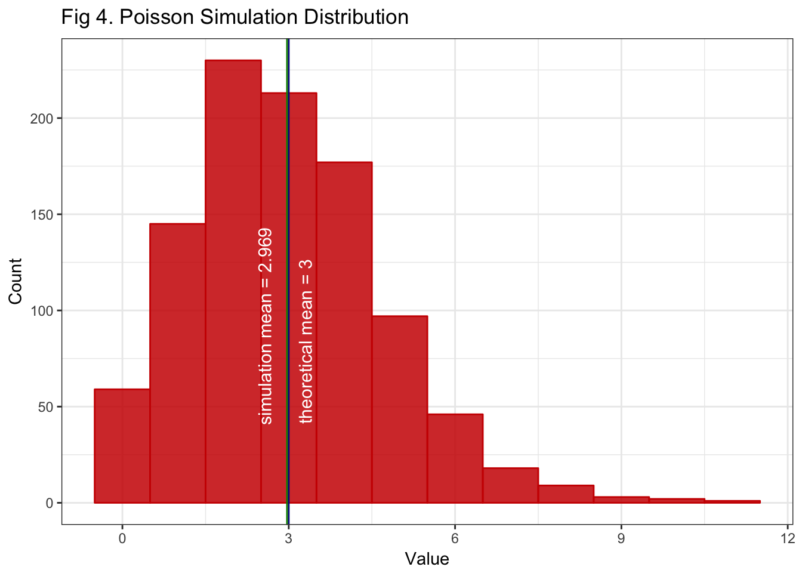

Central Limit Theorem and Law of Large Numbers via Exponential and Poisson Simulations
Prepared by Reynaldo Vazquez
4/24/2017
Introduction
According to the Central Limit Theorem (CLT), in most cases, if we sample from a population using a sufficiently large sample size, the mean of the samples will mimic a Gaussian distribution, even if the underlying variable is not Gaussian.
And according to the Law of Large Numbers (LLN), the mean of the results obtained from a sufficiently large number of draws, should approximate the expected value (i.e. the theoretical mean), and tends to become closer as more draws are performed.
The following produces reproducible examples in R using exponential and Poisson simulations to illustrate both, the LLN and the CLT.
#Required packages:
require(ggplot2)
require(knitr)Exponential Distribution Simulation
First we’ll start with the exponential distribution,
# Set exponential distribution parameters and calculate theoretical statistics:
set.seed(380)
lambda <- 0.2
n <- 1000 # this sets the sample size
theor_mean <- 1/lambda
theor_sd <- 1/lambda
theor_var <- theor_sd^2# Simulate exponential distribution and calculate sample statistics
exp_simu <- rexp(n, lambda)
simu_sd <- round(sd(exp_simu),3)
simu_var <- round(var(exp_simu),3)
simu_mean <- round(mean(exp_simu), 3)For the exponential distribution, the theoretical mean, variance, and standard deviation are given by \(1/\lambda\), 1/\(\lambda^2\), 1/\(\lambda\), respectively. From our parameters, we have that the theoretical mean = 1/\(\lambda\) = 5, the theoretical variance = 1/\(\lambda^2\) = 25, and the theoretical standard deviation = 1/\(\lambda\) = 5.
From the simulation, we have:
Simulation mean = 4.997
Simulation variance = 24.565
Simulation standard error = 4.956
The three are close to their theoretical counterparts, this should be case for large enough n (the sample size), as it is here for n = 1000.
Law of Large Numbers on the Exponential Simulation
The following will do an illustration of the law of large numbers. We will start by calculating the sample mean as we increase the sample size one by one, starting from sample size 1 up to 1000.
# Plot simulated mean as number of draws increases vs. theoretical mean
mean_accum_sample <- NULL
for (i in 1 : n) {mean_accum_sample <- c(mean_accum_sample, mean(exp_simu[1:i]))}
ggplot() + aes(x = 1:n, y = mean_accum_sample) +
theme_bw() +
geom_line(col = "steelblue") +
ylab("Mean") +
xlab("Sample Size") +
ggtitle("Fig 1. Simulated Mean as Sample Size Increases") +
geom_hline(yintercept = theor_mean) +
geom_text(aes(y=(theor_mean - .3), label="theoretical mean = 5", x=700), size=4)
Fig 1. Shows how the sample mean gets closer to the theoretical mean as the sample size of the exponential distribution simulation increases. This is what is meant by the LLN. Right around a sample size of 200, the sample mean of our simulation starts to look like the theoretical mean.
Central Limit Theorem
Before illustrating the CLT, let’s take a look at how the exponential distrbution looks.
# Histogram of simulated exponential distribution
ggplot() + aes(exp_simu) +
geom_histogram(bins=13, color = "red3", fill = "red3", alpha = 0.85)+
theme_bw() +
ylab("Count") +
xlab("Value") +
ggtitle("Fig 2. Exponential Simulation Distribution ") +
geom_vline(xintercept = theor_mean, col = "blue4") +
geom_text(aes(x = (theor_mean + .77), label = "theoretical mean = 5", y = 90),
col = "white", angle = 90, size = 4) +
geom_vline(xintercept = simu_mean, col = "green4") +
geom_text(aes(x = (simu_mean - 0.85), label=paste("simulation mean =", simu_mean), y = 102),
col = "white", angle = 90, size = 4)Figure 2. Shows the shape of our exponentially distributed simulated variable. Because our sample is large enough, the simulated mean occurs about the sample mean as expected by the LLN. If we increase the sample size, this shape will remain approximately the same, it will just look more like its theoretical couterpart.
So now we’ll move on to the CLT. To do so, we’ll simulate 1100 averages of 40 exponentials. The sample size n = 1000 is replaced by sample size n = 40.
# get 1000 exponential samples of size 40 each, and compute the mean of each sample
means <- NULL
n <- 40 # sample size (again)
ns <- 1100 # number of samples
for (i in 1 : ns) means <- c(means, mean(rexp(n, lambda)))
means_var <- (1/lambda)^2/n
sim_means_mean <- round(mean(means), 3)
sim_means_var <- round(var(means), 3)
sim_means_se <- sd(means)Theoretically, the variance of the means is \(1/\sigma^{2/n}\) (in our distributions \(\sigma\) is given by \(\lambda\)) which gives variance of the means = 0.625. In our simulation, the variance of the means is 0.64, which is quite close to it’s theoretical counterpart.
What this means is that, according to the CLT, the means of our exponential distribution samples will mimic a Gaussian distribution, with mean 5.015, which is close to \(\lambda\) and a variance of 0.64. The following figure will illustrate this.
gaussLine = function(x, mean, sd, ns, bw){
# will calculate the Gaussian points to superimpose in the plot
dnorm(x = x, mean = mean, sd = sd)*ns*bw
}# plot histogram of sample means to compare to Gaussian distribution
nbins <- 15
binwidth <- (max(means) - min(means))/nbins
means <- data.frame(means)
ggplot(means) + aes(x = means) + theme_bw() +
geom_histogram(bins=nbins, color = "steelblue", fill="steelblue", alpha = 0.85)+
ylab("Count") + xlab("Mean of Sample") +
ggtitle("Fig 3. Distribution of Exponential Samples' Means vs. Gaussian") +
geom_vline(xintercept=theor_mean, col = "red4") +
geom_text(aes(x = (theor_mean -.13), label = paste("theoretical mean =", theor_mean), y = 91),
col="white", angle=90, size=3.5) +
geom_vline(xintercept = sim_means_mean, col = "green4") +
geom_text(aes( x =(sim_means_mean +.12), label=paste("sample mean =", sim_means_mean), y = 93),
col="white", angle=90, size=3.5) +
stat_function(fun = gaussLine,
args = c(mean = sim_means_mean, sd = sim_means_se, ns = ns, bw = binwidth))
Fig 3. Shows the shape of the distribution of the 1000 means from the size 40 samples. It can be seen that it approximates a Gaussian distribution, this is what we expect from the CLT.
By contrasting Fig 2 and Fig 3, we can see that, although the distribution of the simulation sample is not by itself Gaussian distributed, the distribution of the means of sufficient samples approximates a Gaussian distribution.
CLT on Poisson Distribution
The following illustrates the CLT on a Poisson simulation
# adjusting parameters for the Poisson simulation
lambda <- 3
n <- 1000 # sample size
pois_simu <- rpois(n, lambda)
theor_mean <- lambda
simu_mean <- round(mean(pois_simu), 3)
ggplot() + aes(pois_simu) +
geom_histogram(bins=12, color = "red3", fill = "red3", alpha = 0.85)+
theme_bw() +
ylab("Count") +
xlab("Value") +
ggtitle("Fig 4. Poisson Simulation Distribution ") +
geom_vline(xintercept = theor_mean, col = "blue4") +
geom_text(aes(x = (theor_mean + .3), label=paste("theoretical mean =", theor_mean), y = 84),
col = "white", angle = 90, size = 4) +
geom_vline(xintercept = simu_mean, col = "green4") +
geom_text(aes(x = (simu_mean - 0.4), label=paste("simulation mean =", simu_mean), y = 92),
col = "white", angle = 90, size = 4)
Fig 4. Shows the distribution of our simulated Poisson variable. Again, our sample is large enough for the LLN to take on and get a sample mean close to its theoretical counterpart.
# get 2000 Poisson samples of size 50 each, and compute the mean of each sample
set.seed(380)
means <- NULL
lambda <- 3
n <- 50 # sample size
ns <- 2000 # number of samples
for (i in 1 : ns) {means <- c(means, mean(rpois(n, lambda)))}
sim_means_mean <- round(mean(means), 3)
sim_means_var <- round(var(means), 3)
sim_means_se <- sd(means)# plot the distribution of the Poisson sample means
nbins <- 15
binwidth <- (max(means) - min(means))/nbins
means <- data.frame(means)
ggplot(means) + aes(x = means) + theme_bw() +
geom_histogram(bins=nbins, color = "steelblue", fill="steelblue", alpha = 0.85)+
ylab("Count") + xlab("Mean of Sample") +
ggtitle("Fig 5. Distribution of Poisson Samples' Means vs. Normal") +
geom_vline(xintercept=lambda, col = "red4") +
geom_text(aes(x = (lambda +.05), label = paste("theoretical mean =", lambda), y = 150),
col="white", angle=90, size=3.5) +
geom_vline(xintercept = sim_means_mean, col = "green4") +
geom_text(aes( x =(sim_means_mean -.06), label= paste ("sample mean =", sim_means_mean), y = 152),
col="white", angle=90, size=3.5) +
stat_function(fun = gaussLine,
args = c(mean = sim_means_mean, sd = sim_means_se, ns = ns, bw = binwidth))Fig 5. Shows that the distribution of the simulated Poisson sample means approximates a normal, as expected by the CLT. That is despite that the underlying variable itself is not normal.
Conclusion
The analysis above shows reproducible examples illustrating the Law of Large Numbers using an exponential distribution simulation, and the Central Limit Theorem using exponential y Poisson sumulations. We saw how when a sample gets sufficiently large, its mean approaches its expected value (LLN). And how the distribution of the sample means, specifically for the exponential y Poisson distributions here, mimics a normal distribution.